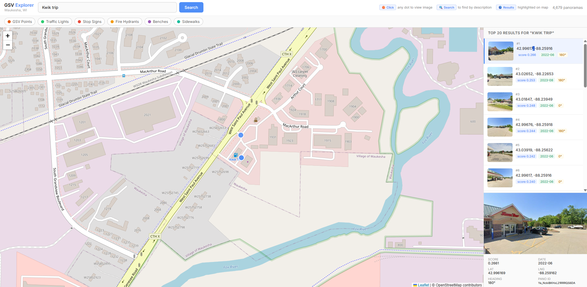

Last year I saw a presentation where a municipality had built their own Google Street View imagery for civil engineers and internal use. It was an awesome feat of resourcefulness and the municipality found it incredibly useful — but the analysis stopped at the imagery itself. With modern embeddings and AI, I wanted to see what kind of application could actually build on top of that data. The idea: use models to find features across all the images that you might care about, whether that's natural language search across images or automated object detection. Type "construction zone" and it finds them all, even if none of those images were ever tagged or labeled.
Where better to try this than my current town? The result is the GSV Embeddings Explorer — a computer vision and semantic search pipeline built on Google Street View imagery of Waukesha, WI.
How It Works
The pipeline has three independent stages that can each be run and resumed separately.
Stage 1: Collecting the Imagery
The first step was building a grid of candidate points across Waukesha using a bounding box and a 75-meter spacing. That produced around 6,700 candidate locations. For each one, I hit the Google Street View Metadata API to check whether a panorama actually exists nearby before downloading anything.
Only candidates with a real panorama get passed to the image download step. Each panorama gets captured at two headings (north and south), keeping the total image count under the 10,000 free tier limit. The final dataset came out to 9,356 images across 4,679 unique panorama points.
Stage 2: Generating Embeddings
With the images on disk, the next step was turning each one into a vector that captures its visual meaning. I used CLIP ViT-L/14 (OpenAI's vision-language model) loaded via open_clip_torch. CLIP is trained to align images and text in the same embedding space, which is exactly what makes the text search possible.
Each image is encoded into a 768-dimensional vector and L2-normalized. All 9,356 vectors get stored in a FAISS IndexFlatIP index for exact cosine similarity search. The embedding step runs in batches of 128 on a GPU and completes in a few minutes.
The key insight: CLIP doesn't need labels. It finds visually similar images to your text query because it learned what things look like from hundreds of millions of image-caption pairs.
Stage 3: Object Detection
Beyond text search, I wanted to locate specific objects across the city. I used YOLOv8x pretrained on COCO to run detection passes across all images. Each object type gets its own independent run, its own output file, and its own map layer. So far the pipeline has detected:
- Traffic lights
- Stop signs
- Fire hydrants — 323 detections
- Benches — 240 detections
Each detection stores the bounding box, confidence score, heading, and coordinates so you can click a dot on the map and see exactly what the model found, with the box drawn directly over the image.
I also ran a SegFormer semantic segmentation pass using NVIDIA's model finetuned on Cityscapes to identify sidewalk coverage across the city. That produced 3,189 images where sidewalks were meaningfully present, surfaced as their own toggleable map layer.
The Application
All of this feeds into a Flask + Leaflet.js web app. The map shows every panorama point as an orange dot. Clicking any dot opens the image and its metadata. Running a text search highlights the top matching results in blue and populates a sidebar with ranked result cards, each showing a thumbnail and a relevance score bar.
Every detection type lives on its own layer with a toggle in the header — traffic lights in green, stop signs in red, hydrants in orange, benches in purple, sidewalks in teal. Click any detection dot to open the image, and if it's a bounding-box detection, the box is drawn on a canvas overlay automatically.
And for the most important use case — Wisconsin residents will be relieved to know you can search "kwik trip" and it works exactly as expected.

Why This Matters for Infrastructure
The interesting thing about this project isn't just the technology — it's what the technology enables. A municipality could use a system like this to ask real operational questions:
- Where are all the fire hydrants within 500 feet of a new construction site?
- Which streets are missing sidewalks on one side?
- Where are stop signs that might be obstructed or faded?
Right now this runs on Google Street View imagery, which is convenient but not always current. The next logical step is replacing GSV with local, more complete imagery — drive a town with a 360° camera, load the images into the same pipeline, and suddenly the municipality has a searchable, AI-analyzed record of their own infrastructure that can be re-run on a schedule to detect change.
The Stack
- Image collection: Google Street View Static API + Metadata API
- Embeddings: CLIP ViT-L/14 via
open_clip_torch, FAISS for search - Object detection: YOLOv8x (ultralytics) pretrained on COCO 80 classes
- Segmentation: SegFormer-b0 finetuned on Cityscapes (HuggingFace Transformers)
- Backend: Flask
- Frontend: Leaflet.js, HTML Canvas for bounding box rendering
- Hardware: RTX 3060 Ti, CUDA 12.8
The whole pipeline runs locally. No cloud GPUs, no managed services. Just Python, a consumer GPU, and a few public APIs.